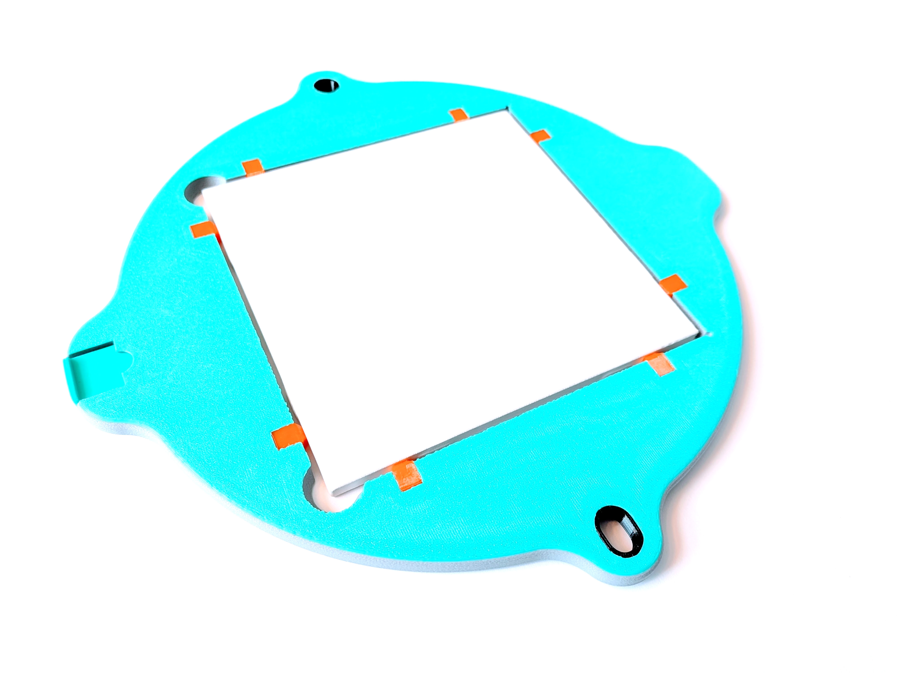
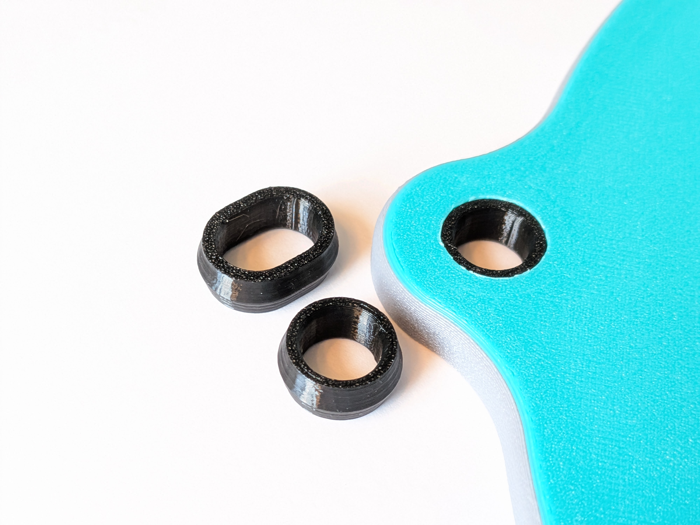
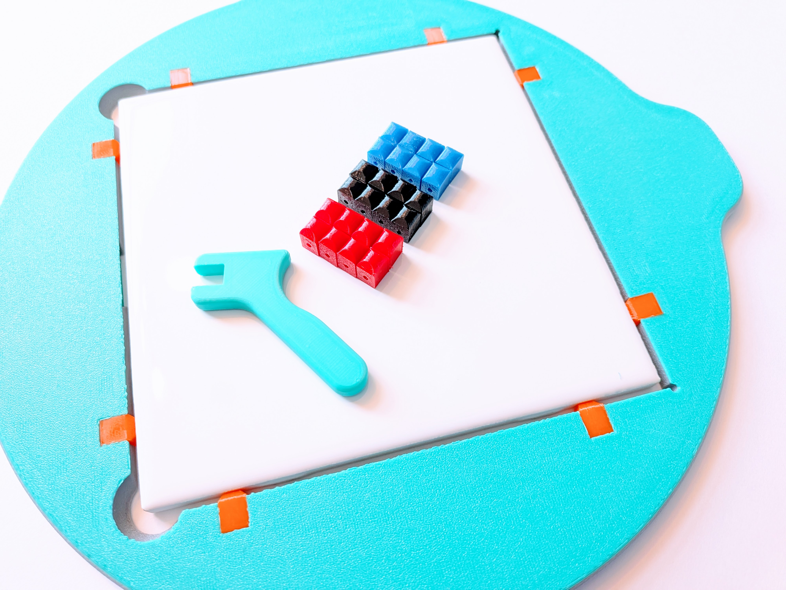

Standard 6-inch tiles make an exceptional throwing surface: they are rigid, completely warp-free, water-durable, and cost pennies compared to traditional bats. Unfortunately, the fixed sizing of most bat adapters results in fitment issues - the bat & drive pins are either too loose or too tight. True to its name, the SnugBat™ delivers a dual promise: a perfectly snug, vibration-free fit on your wheel pins, and a secure, zero-rattle grip on your bat insert.
Our integrated ejection slider pops your insert upward from beneath with a single motion—allowing you to lift the edge with your fingertips without prying or touching wet rims.
Leave your bat in the studio where it belongs. Other systems advise hauling your bat frame into hardware store aisles to physically test tiles one-by-one. SnugBat solves this with modular, color-coded bumpers accommodating 150mm to 155mm inserts (5.91" - 6.10"). Pick up standard tiles from a big box hardware store, or cut your own MDF squares. Snap in the corresponding bumpers with the included calibration tool, and achieve a perfect, zero-rattle fit on your wheel.
Studio Tip for Glazed Tiles: Because glazed ceramic tiles are non-porous, cut your piece with a wire immediately after throwing if leaving it to dry to leather-hard on the tile. This releases base tension and completely prevents cracks. Alternatively, use porous bisque tiles or cut MDF squares for traditional absorption.
Most bats end up in the landfill when the pin holes wallow out or mechanical parts wear down. The SnugBat prevents this: our rubber pin drive bushings, bumpers, and mechanical ejector slider are fully swappable wear components. Refresh them anytime to keep your bat throwing like new for years.
Invest once in a precision master frame, then expand your bat capacity indefinitely using hardware store ceramic tiles or cut hardboard (~$0.30–$1.00 each).
| Bats Needed | SnugBat System* | MDF Bats (~$9/ea) | Plastic Bats (~$15/ea) |
|---|---|---|---|
| 1 | $59 | $9 | $15 |
| 5 | $63 | $45 | $75 |
| 10 | $68 | $90 | $150 |
| 25 | $83 | $225 | $375 |
| 50 | $108 | $450 | $750 |
| 100 | $158 | $900 | $1,500 |
*Assumes standard 6-inch hardware store tile expansion after the included starter tile.
Need extra replacement bushings, spare ejectors, or tips on choosing between tile, bisque, and MDF?
Select your bushing standard (10mm or 3/8") when ordering. Includes master bat, starter tile, bumper sets, bumper swap tool, and installed rubber bushings.